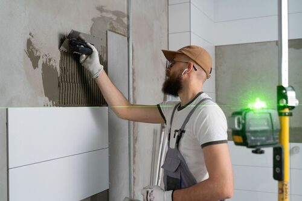

<section class="about__section">
    <div class="container">
        <div class="about__section-wrapper">
            <div class="header__content-tag">
                <h3 class="header__tag-title">
                    Про нас
                </h3>
                <div class="header__tag-line"></div>
            </div>
            <div class="about__header">
                <h2 class="about__section-title">
                    ТОВ «Виробнича компанія Поліпласт»
                </h2>
                <p class="about__section-text">
                    «ВК «ПОЛІПЛАСТ» – національна виробнича компанія, яка з 1999 року спеціалізується на виробництві якісних, високотехнологічних будівельних сумішей. На сьогоднішній день в портфелі компанії три торгові марки
                </p>
            </div>
            <div class="about__items">
                <div class="about__item about__item-1">
                    <div class="about__item-logo">
                        
                    </div>
                    <div class="about__item-wrapper">
                        <h3 class="about__item-title">
                            ТМ «Поліпласт»
                        </h3>
                        <p class="about__item-text">
                            Торгова марка представлена широким вибором сухих будівельних сумішей, грунтовок і емульсій преміум-класу для різноманітних будівельних робіт.
                        </p>
                    </div>
                </div>
                <div class="about__item about__item-2">
                    <div class="about__item-logo">
                        
                    </div>
                    <div class="about__item-wrapper">
                        <h3 class="about__item-title">
                            ТМ «Dops»
                        </h3>
                        <p class="about__item-text">
                            Будівельні суміші, грунтовки, грунт-фарби ТМ DOPS —  це оптимальне рішення для ремонту та приватного будівництва, доступне кожному.
                        </p>
                    </div>
                </div>  
                <div class="about__item about__item-3">
                    <div class="about__item-logo">
                        
                    </div>
                    <div class="about__item-wrapper">
                        <h3 class="about__item-title">
                            ТМ «Green Line»
                        </h3>
                        <p class="about__item-text">
                            Лінія декоративних штукатурок, декоративних фарб для фасаду та інтер’єру. Грунтовки і шпаклівки цієї марки – оптимальна основа для нанесення декоративних матеріалів
                        </p>
                    </div>
                </div>
            </div>
            <div class="about__company">
                <div class="about__company-left">
                    <h3 class="about__company-title">
                        Про компанію
                    </h3>
                    
                </div>
                <div class="about__company-content">
                    <p class="about__company-text">
                        <span>ТОВ “ВК “Поліпласт” входить в число лідерів</span> серед вітчизняних виробників сухих будівельних сумішей. Сьогодні це – виробництво, що динамічно розвивається з сучасним обладнанням і висококваліфікованими фахівцями, власну лабораторію, на рахунку якої безліч втілених в життя ефективних розробок і ноу-хау. Крім того, за допомогою лабораторії здійснюється жорсткий контроль якості як вхідної сировини, так і готової продукції на всіх етапах її виробництва.
                    </p>
                    <p class="about__company-text">
                        Саме тому стабільно-висока якість сухих будівельних сумішей – одна з головних конкурентних переваг продукції «Поліпласт».
                    </p>
                    <a href="#" class="header__catalog-link">
                        Детальніше
                    </a>
                </div>
            </div>
        </div>
    </div>
</section>